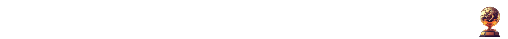
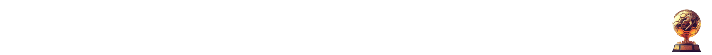

Michel Platini, né le 21 juin 1955 à Jœuf, en France, est une légende du football français et international, connu pour son talent exceptionnel en tant que joueur et son rôle de premier plan dans le monde du football en tant qu'administrateur.
Platini a commencé sa carrière professionnelle en 1972 avec l'AS Nancy, où il s'est rapidement fait remarquer par ses compétences techniques et sa vision du jeu. Il a contribué de manière significative à la victoire de Nancy en Coupe de France en 1978 avant de rejoindre l'AS Saint-Étienne en 1979. Avec Saint-Étienne, il a atteint la finale de la Coupe d'Europe des clubs champions en 1982, mais le club a été battu par le Bayern Munich. Cependant, c'est son passage à la Juventus en Italie qui a véritablement marqué l'apogée de sa carrière. De 1982 à 1987, Platini a remporté de nombreux titres avec la Juventus, dont deux championnats italiens, une Coupe d'Italie et la Coupe des clubs champions européens en 1985. Il a été le meilleur buteur de la Ligue des champions pendant trois saisons consécutives de 1983 à 1985. Sur la scène internationale, Michel Platini a été le capitaine de l'équipe nationale française et a participé à trois Coupes du Monde de la FIFA (1978, 1982, 1986) et deux Championnats d'Europe (1984, 1992). Il a joué un rôle essentiel dans le succès de l'équipe nationale française lors du Championnat d'Europe 1984, remportant le tournoi à domicile et terminant meilleur buteur avec neuf buts. Platini a remporté le Ballon d'Or à trois reprises, en 1983, 1984 et 1985, devenant ainsi l'un des meilleurs joueurs de l'histoire du football. Sa carrière de joueur a pris fin en 1987 en raison de problèmes de genou. Après sa retraite en tant que joueur, Michel Platini s'est tourné vers une carrière administrative dans le football. Il a été élu président de l'Union des associations européennes de football (UEFA) en 2007, occupant ce poste jusqu'en 2015. Cependant, sa carrière a été entachée par des allégations de corruption, ce qui a entraîné sa suspension de toute activité liée au football en 2015. Malgré les controverses, Michel Platini reste une icône du football, saluée pour son génie sur le terrain et son influence dans le développement du sport en tant qu'administrateur. 
